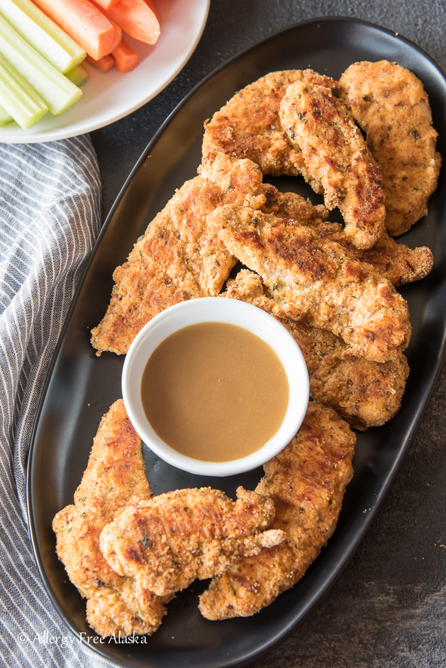

Paleo Chicken Strips

Description
Deliciously gluten free, nut free, and paleo friendly chicken strips made in an oven
Ingredients
- 3 or more chicken breasts/ 12 or more Chicken wings
- 1 Bottle of Sake (No you don't need the whole thing!)
- 2 tbsp Arrowroot flour
- 1 tsp onion powder
- 1 tsp garlic powder
- 1tsp cayenne pepper
- 1/4th tsp pink himalayan salt
Steps
- Set an oven to 425 degrees
- Take the chicken breasts and place them in a zip-lock bag and fill with sake to cover the chicken and place it in the fridge on a plate or bowl for 30 minutes
- Combine the Spices and Arrowroot flour together into a flour blend, this will act as the breading.
- Remove the chicken from the bag of sake and pat dry
- Slice chicken breasts into strips carefully.
- Place the chicken and flour blend into another zip-lock breading and shake it up to coat the chicken
- Remove the breaded chicken from the bag and place it on to an oven safe pan
- Let Chicken cook for 25 minutes and then serve with a sauce of your choice!
Home